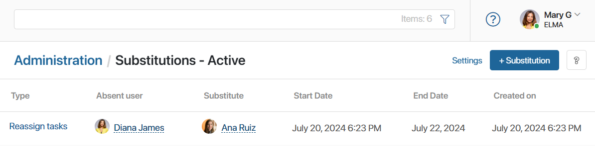
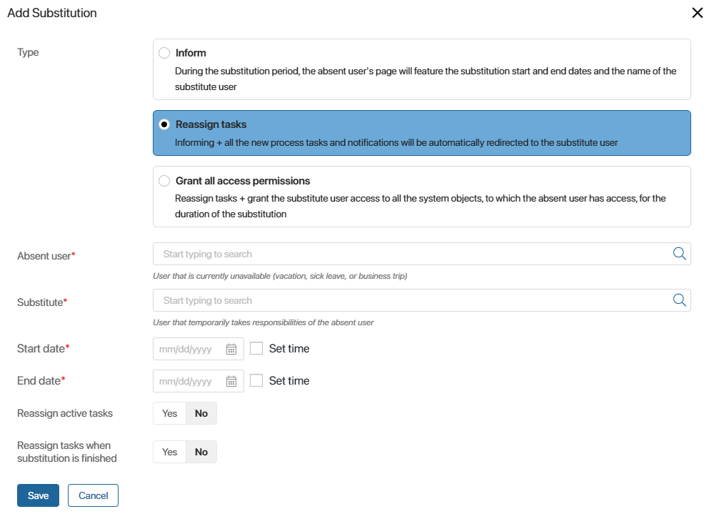
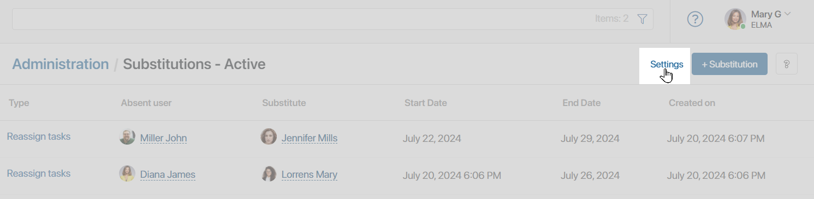
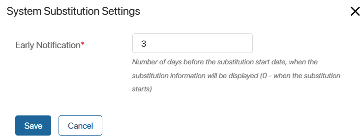
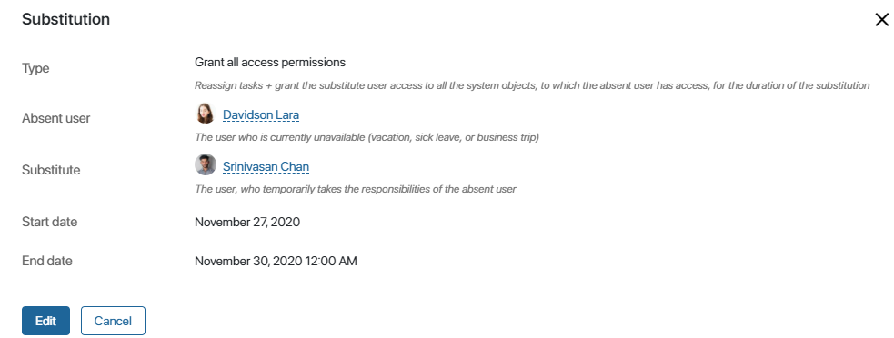
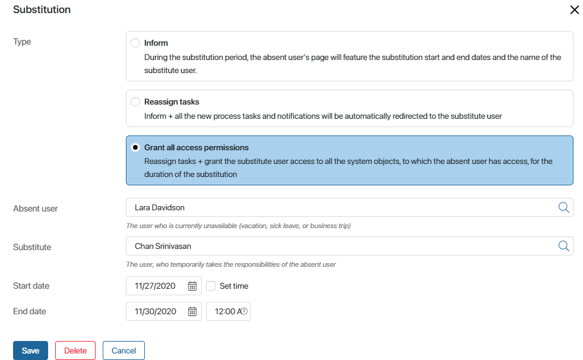
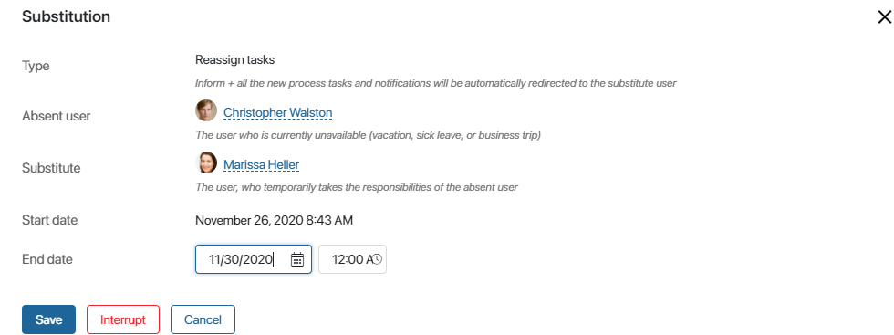
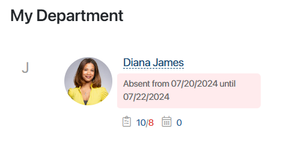
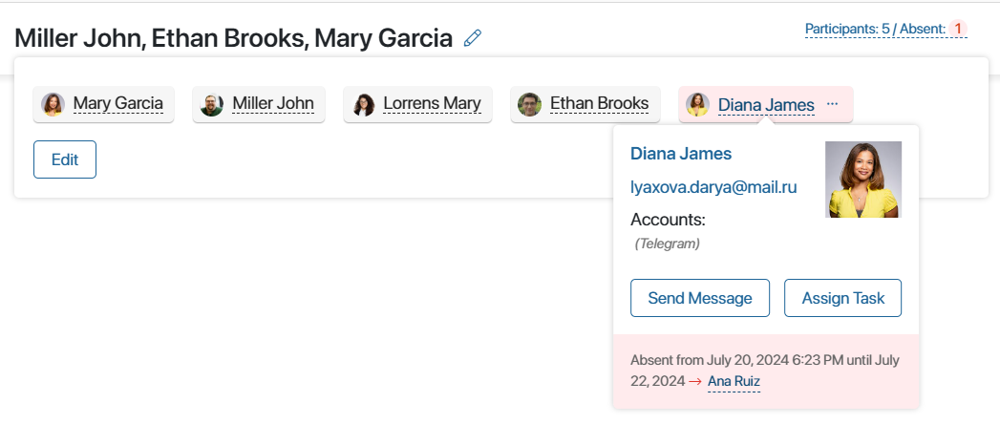
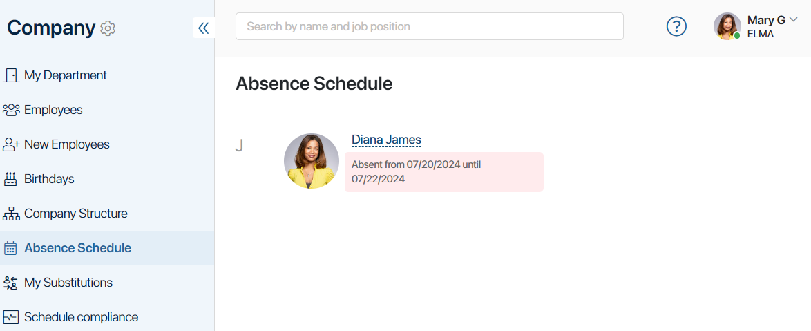

It is important to organize the workflow in such a way that work is not interrupted when an employee is absent from the workplace, for example, on vacation, in training, or on a business trip. For this purpose, the system provides absence notifications and a substitution mechanism.
Let’s say your accountant is planning to take a vacation. They start the Leave request process, and the administrator receives a task to assign a substitute user for the duration of the vacation. Once the substitution starts, the accountant's tasks will be reassigned to the substitute user, and other employees will know who to address with their working questions.
Substitution types
There are three types of substitution in BRIX, which differ by the set of rights assigned:
- Inform. It is used when you just need to show users that an employee is absent. It is not necessary to specify a substitute for this type. For example, when the current issues are not urgent or there is none to delegate them to.
If a substitute user is specified, they will be able to solve current issues, but will not have access to tasks, apps, or documents of the absent employee.
- Reassign tasks. If this type is selected, the informing function is retained. In addition, all new tasks that users assign in the system during the substitution period as well as tasks and notifications from business processes will be delegated to the substitute. To delegate to the substitute the tasks assigned before the substitution start date, use the Reassign active tasks option.
Consider the following example: an employee draws up a document within a business process, sends it to their supervisor for approval, and goes on an urgent business trip. The supervisor does not approve the document and sends it back to make some corrections. According to the process flow, the absent employee should receive the task to correct the document. However, since the substitution with task reassignment was set up, the task is assigned to the substitute user. The substitute user corrects the document and sends it for approval once again without delaying the process.
- Grant all access permissions. This substitution type includes the previous two. In addition, the substitute user is granted access to all system objects accessible to the absent user: documents, files, workspaces, and apps. If the substitute user receives a notification or a task containing a link to a calendar event of the absent user, they will also be able to access this event.The only exception is the My Department section to which the access is not granted.
Please note that if a user is granted such access permissions when substituting a system administrator, but is not included in the Administrators group, they will not have access to the Administration workspace, to the settings of apps and workspaces, etc.
Let’s consider the following example: the office accountant is on sick leave yet it is time to pay contractor invoices. The payroll clerk is substituting the accountant but does not have access to the Contractors and Invoices apps, which are needed to make the payments. Since the administrator selected the Grant all access permissions option when assigning the substitute, the payroll clerk is automatically given temporary access to these apps. Now they will be able to make all the necessary payments on time, without waiting for the accountant to come off sick leave.
When selecting the substitution type, we recommend that you refer to the company’s org chart and internal policies.
Add a substitution
Go to Administration > Company > Substitutions.
начало внимание
Only users included in the Administrators group can add, configure, edit and delete substitutions.
конец внимание
The page that opens shows all current substitutions.

To add a new substitution
- Click +Substitution in the top right corner of the page.
- Fill in the form:

- Type. Select the substitution type depending on what rights you want to assign to the substitute.
- Absent user*. Specify the employee who will be absent.
- Substitute*. Specify the substitute user.
It is not necessary to specify a substitute for the Inform type.
- Start date* and End date*. Specify the start and end time of the substitution. The substitution period is unlimited and can last for one hour or more than a year, for example, if the employee is on a long business trip.
- Configure the task reassignment options:
- Reassign active tasks. Enable this option to reassign the active tasks assigned to the substituted employee prior to the start of the substitution. The tasks due after the end of the substitution, or with no due date specified, are not reassigned.
- Reassign tasks when substitution is finished. Select Yes to reassign all the tasks back to the substituted employee after the substitution period is over.
These options are not available if you have selected the Inform substitution type.
- Click Save.
Customize absence notification
By default, users see information about their colleague’s absence only when the substitution has already started. But you can set up a notification in advance so that they have time to solve urgent issues with the right employee.
In this case, you need to specify how many days in advance the information about the upcoming absence should appear in the system.
To do this, open the page with the list of substitutions, and in the upper right corner click on Settings.

In the opened window, specify the desired number of days.

Please note that this setting applies to all upcoming substitutions.
Working with substitutions
You can view, edit, and interrupt substitutions.
View a substitution
The Administration > Substitutions workspace is set up as a hierarchical folder, which makes it easy to view and find the desired substitutions:
- Current. All substitutions currently in effect.
- Upcoming. All scheduled substitutions that have not yet begun.
- Archive. All substitutions that have been completed or interrupted.
- All. All substitutions.
Click on a substitution to open its page with all the information.

Edit or delete a substitution
You can edit a substitution that is already in effect or has not yet started. Open its page and click Edit.
It the substitution has not yet started, you can edit any of the fields: change the users, the substitution type, and the start and end dates.

If the substitution is already in effect, you can only edit the end date and time.

In the same window, you can use the Delete or Interrupt buttons to delete a substitution that has not yet started or interrupt one that is already in effect.
A deleted substitution cannot be restored, as information about it is erased from the system. To notify employees and give rights of an absent user, add the substitution again.
Substitutions in the interface
Let’s take a look at how substitutions are shown in the system interface. Next to the name of an absent user, you will see the substitution period and a link to the substitute user’s page. Such information appears on the My Department page or when you, for example, create or view a task or an event.

In messages and group chats the name of the absent user is highlighted. Click on it to view the information about the employee and to see until what date they are absent and who their substitute is.

If the absent user belongs to a group chat and the substitute user does not, other users can add the substitute user to that chat by clicking on the three dots icon next to the absent user’s name.

You can view the list of all users absent on a given day in Company > Absence Schedule. In the same section in the My Substitutions tab, you can see who you are currently substituting.
